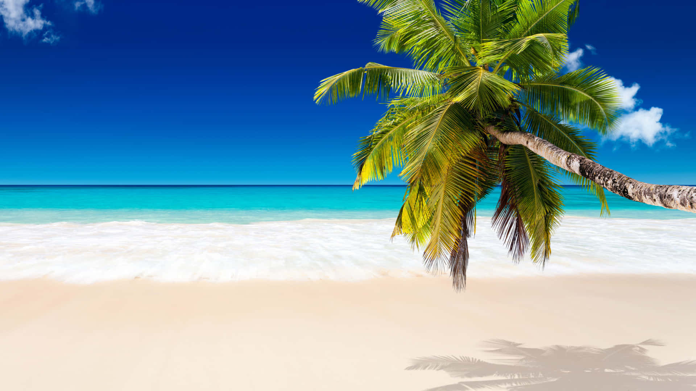
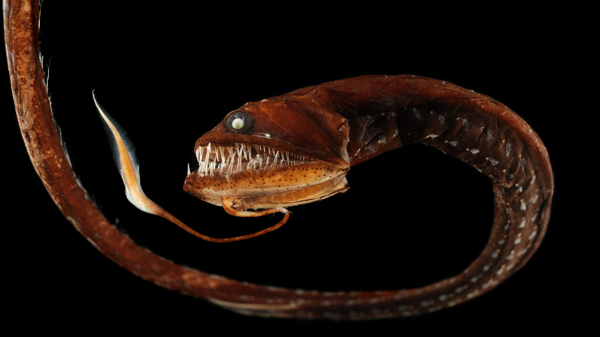
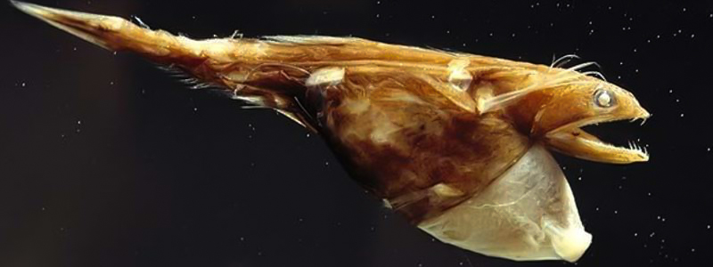

Берег Океана
Над уровнем моря
🏖️ Здесь начинается наше путешествие
Мы стоим на берегу бескрайнего океана. Волны набегают на песок,
а впереди нас ждет удивительное путешествие в неизведанные глубины.
Забирайтесь в батискаф и присоединяйтесь к нашему путешествию!
🦀
🐚
🦐

Поверхность Океана
0 метров
🌊 Здесь начинается жизнь в океане
Солнечный свет проникает на глубину до 200 метров.
Здесь обитает большинство морских животных, которых мы знаем.
🐠
🐟
🦈

Коралловые Рифы
20 метров
🪸 Красивые мелководные кораллы
На глубине 20 метров вашим глазам открывается совершенно другой мир.
Недалеко от берега растут красивые мелководные кораллы. Здесь обитает 25% всех морских видов!
🐠
🐟
Зона Дайверов
40 метров
🤿 Максимальная глубина для дайверов-любителей
На глубине 40 метров мы прощаемся с дайверами-любителями.
Это максимальная глубина, на которую им разрешено погружаться.
Здесь давление в 5 раз больше атмосферного!
🐠
🐟

Китовая Акула
70 метров
🦈 Крупнейшая из современных рыб
На глубине 70 метров мы видим китовую акулу. Это крупнейшая из современных рыб,
и ее вес достигает 34 тонн. Длина может достигать 18 метров!
🦈
🐟

Темная Зона
150 метров
🌙 Только 1% солнечного света
А теперь мы входим в темную часть океана. На глубину 150 метров с поверхности
проникает только 1% солнечного света.
🦑
🐟

Зона Сумерек
300 метров
🌅 Последние лучи солнца
На этой глубине проникает только 0.1% солнечного света.
Многие рыбы здесь имеют огромные глаза, чтобы уловить каждый фотон света.
Здесь начинается мир биолюминесценции.
👁️

Последний Синий Кит
500 метров
🐋 Последний синий кит на этой глубине
Погружаемся дальше, и на глубине 500 метров мы увидим последнего синего кита.
Нет, это не значит, что он действительно последний, просто глубже синие киты не плавают.
Это самое большое животное на Земле - до 33 метров в длину!
🐋

Гигантский Кальмар
900 метров
🦑 Существо с глазами размером с тарелки
Легендарный гигантский кальмар обитает на глубине 900 метров.
Только представьте себе существо с глазами размером с тарелки.
Длина щупалец может достигать 13 метров!
🦑

Белая Акула
1280 метров
🦈 Сверххищники в темных водах
Глубина 1280 метров, и мы видим свирепых белых акул.
Эти сверххищники на такой глубине чувствуют себя совершенно спокойно.
Длина может достигать 6 метров, а вес - 2 тонны!
🦈
Зона Рыболовных Сетей
1500 метров
🕸️ Громадные рыболовные сети
На этой глубине применяется глубоководный рыболовный трал.
Эти сети могут быть длиной до 2 км и высотой до 200 метров!
Они ловят рыбу, которая никогда не видела солнечного света.
🕸️
Глубина Большого Каньона
1830 метров
🏔️ Глубже Большого Каньона
Если бы мы были внизу Большого Каньона, мы бы сидели в его самой глубокой точке.
Но мы в океане! Здесь давление в 183 раза больше атмосферного.
Температура воды около 2-4°C.

Идиакант
2000 метров
👹 Кошмарное существо из темных вод
Если мы будем вести себя тихо, то на глубине в 2000 метров мы увидим идиакантов.
Это кошмарное существо обитает в темных водах океана.
👹

Зона Кашалотов
2250 метров
🐋 Последние кашалоты
На глубине 2250 метров мы попрощаемся с кашалотами.
Глубже они не ныряют. Эти гиганты могут задерживать дыхание до 90 минут!
Их мозг весит до 9 кг - самый большой среди всех животных.
🐋

Живоглот
4000 метров
🐠 Монстр из ваших худших кошмаров
На глубине 4000 метров появляются монстры из ваших самых худших кошмаров.
Живоглот может проглотить добычу в 2 раза больше себя.
🐠

Марианская Впадина
6000 метров
🌊 Официальное начало Марианской впадины
А теперь начинается самая глубокая и темная часть океана.
Мы погружаемся в Марианскую впадину. Официально она начинается на глубине в 6000 метров.
Давление здесь в 600 раз больше атмосферного!
Ультра-Абиссальная Зона
6500 метров
🌑 Экстремальные условия
Здесь начинается ультра-абиссальная зона. Давление в 650 раз больше атмосферного!
Температура воды около 1-2°C. Здесь обитают только самые выносливые существа.
Многие из них имеют прозрачные тела.
👻
Зона Затонувших Кораблей
7000 метров
🚢 Самые глубоководные обломки
На этой глубине покоятся самые глубоководные обломки кораблей.
Давление здесь невероятно велико - в 700 раз больше атмосферного!
Металл кораблей может сохраняться здесь тысячи лет.
🚢
Бездна
8000 метров
🌑 Самая глубокая и темная часть океана
Мы погружаемся все глубже, и тут вы больше не увидите рыб или других позвоночных.
Для них давление слишком велико.

Самая Глубоководная Рыба
8178 метров
🐟 Pseudoliparis swirei
На этой глубине обитает самая глубоководная рыба - Pseudoliparis swirei.
Она была обнаружена в Марианской впадине на глубине 8178 метров!
Эта рыба имеет прозрачное тело и огромные глаза. Давление здесь в 817 раз больше атмосферного!
🐟

Бездна Челленджера
10927 метров
🌊 Самая глубокая точка на Земле
Самая глубокая точка поверхности Земли называется Бездна Челленджера.
Она находится на дне Марианской впадины на глубине 10927 метров.
Давление здесь в 1100 раз больше атмосферного!